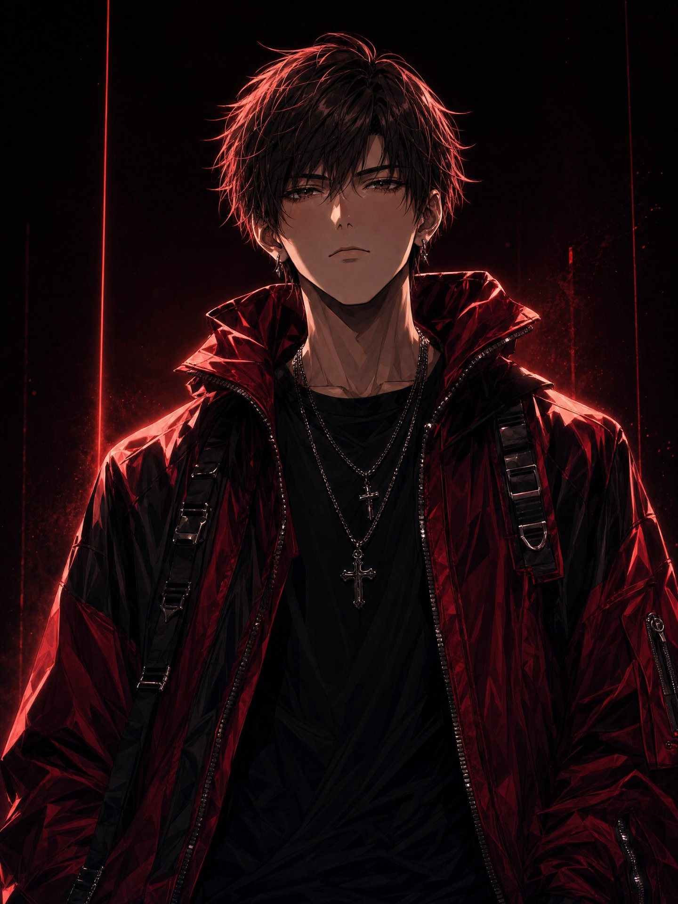
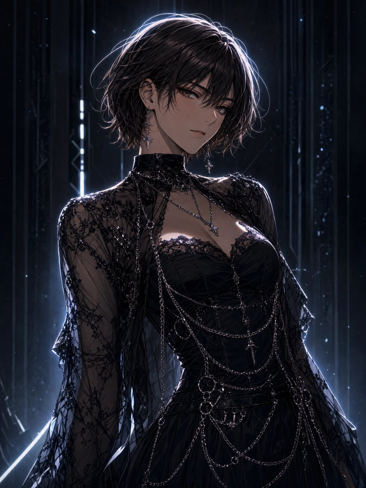
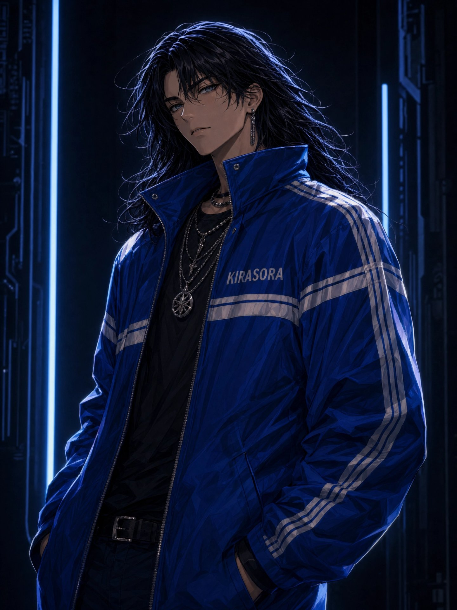
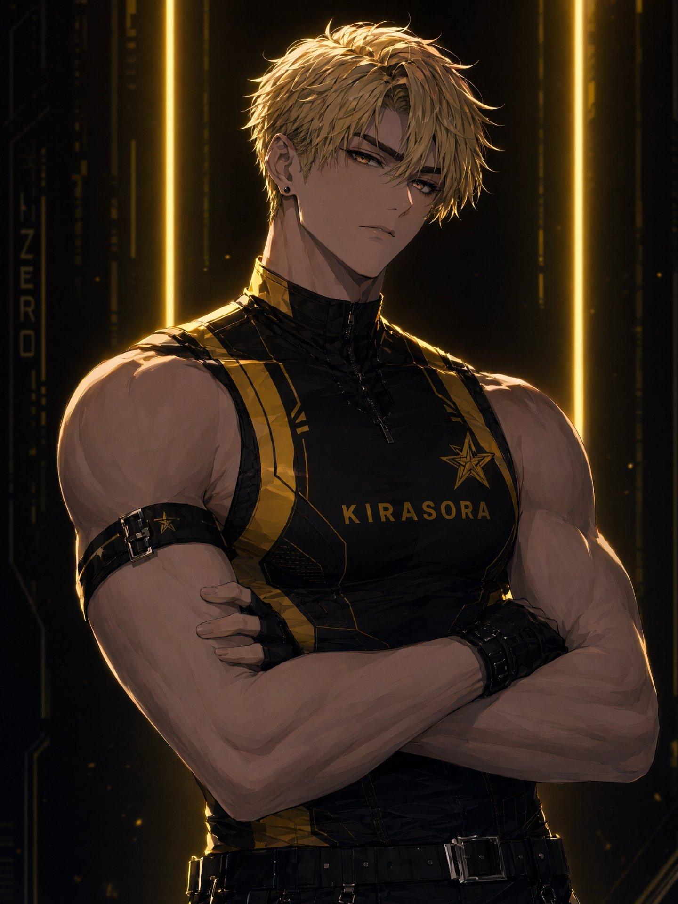

主唱 · 吉他手
Kira
樂團的歌曲創作大腦，包辦詞曲。喜穿潮流服飾，性格內斂卻在台上點燃全場。代表色紅，愛用 ESP 吉他。
THE BAND
四位來自霓虹邊緣的靈魂，各自帶著一束光。

主唱 · 吉他手
樂團的歌曲創作大腦，包辦詞曲。喜穿潮流服飾，性格內斂卻在台上點燃全場。代表色紅，愛用 ESP 吉他。

主唱 · 吉他手
美貌擔當，性格開朗像小太陽。代表色黑，手持 Gibson 吉他，笑容比霓虹更耀眼。

主唱 · 低音吉他手
團內開心果，性格搞笑總能逗大家笑。代表色藍，抱著 ESP 低音吉他穩住整首歌的底。

主唱 · 鼓手
性格爽朗、節奏感天生的鼓手。代表色黃，一槌落下，全場跟著他的心跳走。